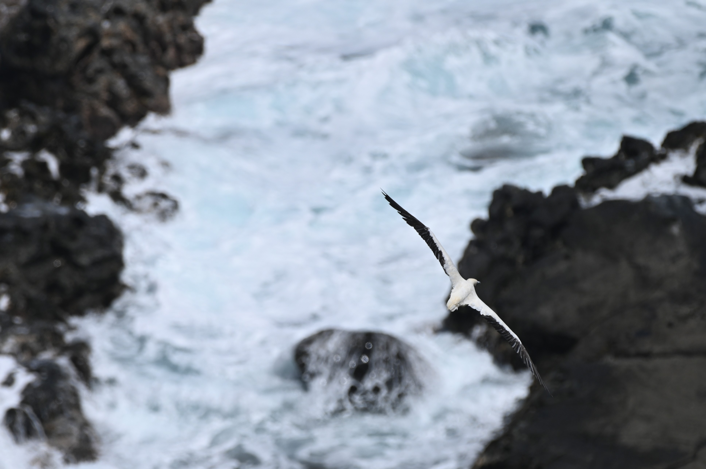
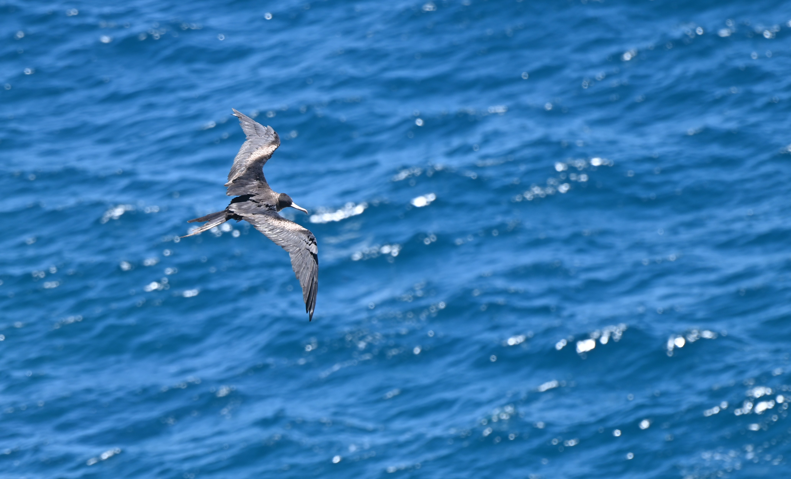
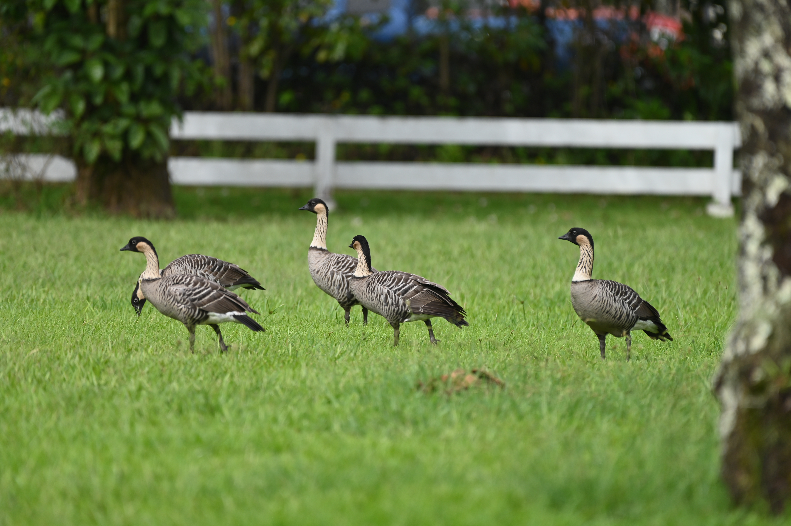
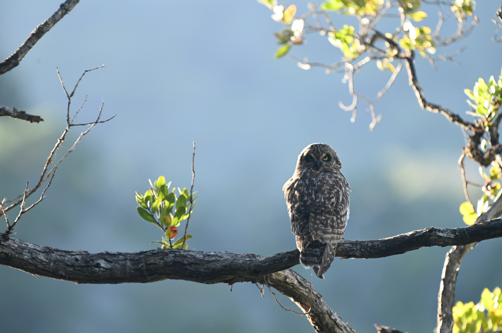

Wildlife of Hawaii
Coasts
Laysan Albatross

Description
The Laysan Albatross is a large seabird that spends the majoriy of its life at sea. They mate for life, and fairly often will do so in polygamous and same sex relationships. They spend almost all of their adult life on the wing, even sleeping while flying using their massive 6 ft wingspan to catch updrafts and only land to nest. This make them fairly hard to photograph and I was luck to be able to photograph this juvenile Laysan Albatross learning to fly, indicated by the not fully lost down covering its head.
Habitat
While the Laysan Albatross does spend almost all of its life flying out at sea, it nests on cliffsides near the ocean. The ocean breeze provides helps juveniles practice catching the wind, as pictured above, resulting in the babies doing these adorable little hop skips while flapping and spreading their wings, which is actually what the juvenile is doing in these photos.
Conservation
The Laysan Albatross is hurt by overfishing, plastc pollution ingestion, and loss of nesting habitats, as cliffsides are often converted into scenic housing. Within Hawaii, they will nest in greenspaces in cliffside neighbordhoods. The juvenile here was nesting in a roundabout in a cul-de-sac and signage was put up asking peoiple to keep a 30 ft. distance from it in order to avoid distrubing its development, keeping that kind of distance from them is reccomended and if do find them nesting in public parks or other such spaces, give them the berth they need.
Description
The Green Sea Turtle is found throughout Hawaii's beaches. It primarily eats seagrasses and alagae and you can regularly see them while snorkeling in Hawaii. The one in this picutre I found basking on a boat ramp at a popular snorkeling site. They will regularly pull themselves onto shore to avoid predators and this one chose the boat ramp as the safest spot it could find.
Habitat
The Green Sea Turtle is found throughout the sea grass beds and coral reefs in Hawaii and nest on its sandy beaches, digging large pits to lay their eggs in.
Conservation
The Green Sea Turtle's biggest threat in Hawaii and abroad is the loss of nesting habitat. Since they rely on beaches, popular tourist destination spots, laying eggs securely is harder than ever. Even worse, light and noise pollution often confuses bay sea turtles, causing them to lose thier orientation and craw inland instead becoming easy prey for the numerous predators already present. The large resorts found in Hawaii are particularly egregious sources of this light pollution and often avoid taking appropiate measures to protect turtle nesting season. Simply turning kights off during turtle nesting season and using low intensity red light during nesting season avoids confusing the baby turtles and allows then to safely reach the water.
Green Sea Turtle

Red-footed Booby

Description
Red-footed Boobies are a pan-tropical seabird species. They feed by plunging into the water headfirst to catch. I photographed this one at a protected colony of seabirds around old lighthouse. You could see them nesting and flying in large numbers constantly soaring out to look for prey and returning. They are recognizable by their vividly blu ebeaks and bright red wbbed feet.
Habitat
They mainly nest on cliffsides, both in trees and on the ground and build farily large stick nests there. They hunt in the ocean open. so you will rarely ever see them diving near where they nest, I was there for a couple hours and didn't see them dive once.
Conservation
The Red-footed Booby's main threats are the loss of nesting habitat, introduced predators like rats and mongooses on nesting islands, and the decline of fish populations due to climate change and overfishing. While they are ot considered very threatned at the moment, seabirds are deccreasing in number as a whole from these threats, so they aren't totally free from concern.
Description
The Great Frigatebird is a the second largest frigatebird species and found throughout the tropical Pacific and Indian Oceans. The Great Frigatebird is one of my favorite species of bird I have gotten to photograph. They get their name from pirate frigates, as their main feeding strategy is to steal fish from other seabirds after a successful hunt.
Habitat
Frigatebirds nest in the same places Boobies do in order to parasatize off of them. They nest primarily in trees but sometimes will nest on the cliffside. Frigatebirds hunt in the open ocean and sleep on the wing to travel across them, similar to Albatrosses. Unlike Albatrosses though, they do not have waterproof feathers so they avoid hunting any animals they can't snatch up from the surface if other birds aren't available to steal from.
Conservation
The Great frigatebird has the exact same problems as the Red-footed Booby. Introduced nest predators, fish decline due to overfishing and climate change, and reduced nesting habitat all threaten the frigatebird since it relies on other seabirds for food. They aren't particularly threatened since there are quite a few stable populations of seabirds, but the risk to them are increasing.
Great Frigatebird

Terrestial
Nene

Description
The Nene is a endemic goose to the Hawaiian Islands, and their state bird. It's found on all of the southern isalnds of Hawaii but I believe is most abundant on Kauai due to rigourous conservations efforts. It's closest relative is the Canadian Goose, the most common goose in America today, and the two have a striking resemblance. Unlike the Canadian Goose though, it does not undergo long distance migrations and spends much less time in the water due to very little webbing on the feet so it can navigate lava rocks.
Habitat
The Nene is almost entirely terrestial and occupies local grasslands, wetlands, lava rock plains, and nowadays local lawns, favoring wide open habitats where they feed on leaves, grasses, and trees. If you keep an eye out for them while visiting Hawaii, you can see them feeding in flocks in farmland and lawns.
Conservation
Hawaii's native bird population has been decimated with the arrival of European colonization and the introduction of many inasive species. The loss of habitat due to the forced introduction of crop and ornamnetal plants and predators like rats and pigs and mongooses which hunt the nests of native birds has had a devastating effect on Nene populations too. It has rebounded from the edge of extinction and the population is growing thanks to conservation efforts, but it still faces risks from these threats whcih are very much still present on the Hawaiian Islands. The low population of these predators on Kauaui with no Mongooses present at all, is one of the factors behind their substantial population there.
Description
The Pueo, also known as the Hawaiian Short-Eared Owl, is an endemic variant of the short-eared owl found globally. They are relatively new to the Hawiaan islands having arrived only around 800 years ago survijng presumably by hunting the introduced Polynesian rat population
Habitat
They hunt in the forests and open field, primarily during the twilight hours, and mainly hunt rodents. They nest on the ground to lay their eggs.
Conservation
The Pueo is considered imperiled with a delcinging population. Their ground nests are threatened by mongooses which eat their eggs and they do not do well with light pollution and many have been killed by nightime traffic.
Pueo

What to do about seabirds found on the road?
Regional Conservation
The biggest threats conservationally on Hawaii are habitat loss and degradation, climate change, overfishing, coral bleaching, invasive species, pollution and light pollution. The most destructive vertebrate invasive species are mongooses, pigs, rats, and worst of all cats whcih have decimated local bird populations. Keeping cats indoors should be done at all times anywhere in the world actually due to their sheer success as predators. Invasive beetles, plants, and especialy the Rapid 'O'Hia Death fungus have also greatly reduced the amount of native plants on the island, with only the high mountains remaining mostly native in terms of flora.
If you are visiting any of the Hawaiian Islands (and even if you aren't) there is a number of things you can do to help. First of all, carrying sanitizing supplies and making use of foot brushes near trailheads will help reduce the spread of Rapid 'O'Hia Death (ROD) by simply dnsitizing shoes or even just brushing them. Don't walk on the coral reefs when they are exposed at hugh tides, large numbers of people doing this will destroy the upper layer of the coral as it is sensitive to touch and should be avoided doing so. Make sure to buy only reef safe sunscreen if you will be enetering the water in any capacity. Also, many of the websites I linked provide ways to donate or volunteer if you are interested, along with helpful addtional info like wht to do in the case of injured wildlife. I perosnally volunteered with my sister at the Waipa Foundation when we visited Kaua'i. They offer a large variety of oppurtunites to help contribute to local communities and conservation and I quite enjoyed volunteering there myself.